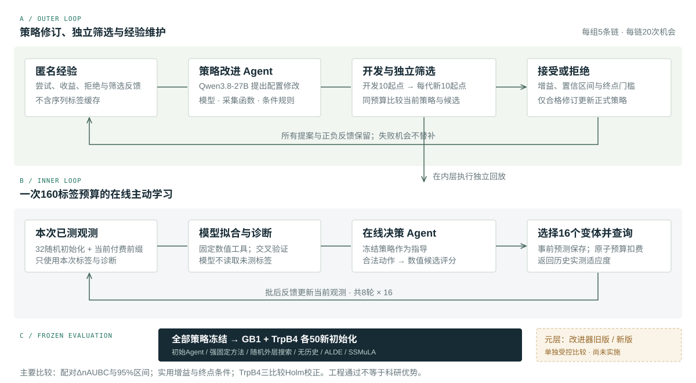

在线主动学习
Qwen3.8-27B 接收本次已测反馈和策略指导，选择模型、采集函数与候选范围。数值工具拟合和评分，查询服务按预算返回历史实测标签。
加载失败时保留待确认状态，不推算进度。
内层执行查询，外层修订策略。
继承策略与匿名经验，不继承序列标签缓存。

Qwen3.8-27B 接收本次已测反馈和策略指导，选择模型、采集函数与候选范围。数值工具拟合和评分，查询服务按预算返回历史实测标签。
每条搜索链 20 次修改机会，所有提案和拒绝保留。每代在 10 个新筛选初始化上比较候选与当前策略，通过预定条件才接受。
三个外层组各 5 条链。所有策略冻结后，在 GB1 与 TrpB4 各 50 个新共同初始化上正式比较，不按最终成绩重选方法。
先登记，后查询。
正式测试与开发选择分开。
基于历史实测适应度数据进行主动学习回放。固定方法开发使用 53 个配置、10 个共同初始化；外层开发与每代筛选初始化分离。
正式性能测试必须等待全部策略冻结。冻结前只做数据审计，不依据该任务的表现设计或选择策略。
| 组别 | 方法 | 作用 | 正式效果 |
|---|
主要指标为 nAUBC（归一化 best-so-far 曲线下面积），终点 Best@160 与成本另报。TrpB4 主要比较为有历史改进后 Agent 对初始 Agent、随机外层搜索及强固定方法；20000 次配对链 × 初始化重采样，Holm 三比较校正（α = 0.05），并保留 ΔnAUBC ≥ 0.01 与归一化终点差值 ≥ −0.02 的门槛。
下列结果来自已完成的 GB1 阶段研究。
它们不能替代当前完整在线系统的正式评价。
点表示配对均值差，线表示 95% 置信区间；竖线为零。不能跨研究比较不同初始化下的绝对均值。
| 候选 / 对照 | 性质 | ΔnAUBC | 95% CI | 原条件 |
|---|
| 方法 | 初始化 | 搜索链 | nAUBC | Best@160 |
|---|
执行计数、工程验证和科研结论分开。
快照过期会明确提示。
已完成。固定 32 + 8 × 16 协议，独立回放记账。
53 个配置 × 10 初始化已完成；强固定方法按开发协议选择。
执行状态正在核对。
计划共 2400 次正式回放；全部策略冻结后启动。
完整核对结果、费用和预定主要比较；改进器旧版／新版需单独受控评价。
已记录的 371 条拒绝响应，其动作参数合法，说明均为 501–1000 字符；旧规则以 500 字符上限拒绝整条决策。隔离修正通过独立代码评审和另一个全新 Agent 的 30 项人工测试，尚未接入正式研究。该证据不证明发现效率改善。
当前研究中断及未完成消费正在核查；原请求、标签查询与失败记录保留。计数同步成功不等于实验仍在运行。